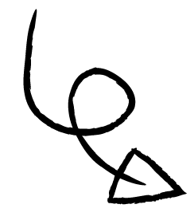
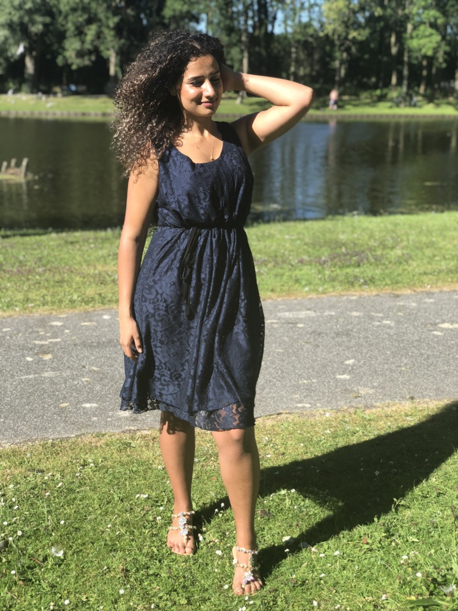

My name is Nuray Tuncer and I am a full-time student.
At the moment I'm studying Communication and Multimedia Design at The Hague University. In the second year I follow the course HCI technologies and this portfolio has been drawn up for this.
This is me, thinking about the good things to come 💭


From this course, I expect a lot. In the previous semester I started to hear all kinds of stories about the HCI weeks in Zoetermeer. For this reason I immediately had a positive attitude and I can't wait for the seminars and the HCI weeks. Normally I don't like lectures, but now I think I will like them... This is rare!
I have always been interested in the technical part, but I never went into it. Thanks to this course, I hope I can master the basis a bit. After this course I will not stop gaining knowledge about the topics that were discussed during the lectures and seminars.